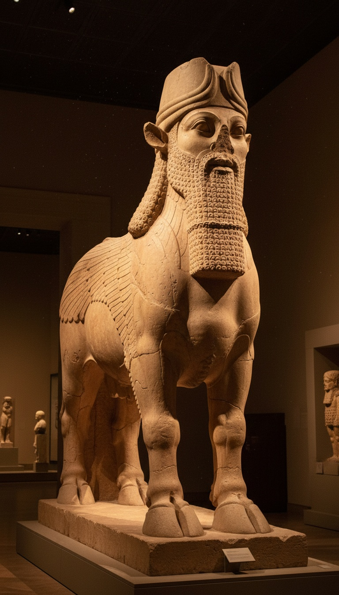

Isaiah named an Assyrian king that no history book on earth had ever heard of, and in 1843 a French diplomat dug up his palace.
For roughly twenty-five centuries, one line of scripture was the only place the name Sargon survived. The scholars of Europe decided the line was wrong. Then the ground in northern Iraq opened up and handed back a royal city, a field of winged colossi, and the king's own written account of the exact siege Isaiah described.

One Verse, One Name, Twenty-Five Centuries of Silence
Isaiah 20:1 is one sentence long, and it carries an empire. “In the year that Tartan came unto Ashdod, when Sargon the king of Assyria sent him, and fought against Ashdod, and took it.” That one line gives you a king, a commander, and a Philistine city on the coast of what is now Israel.
The verse sets up one of the strangest prophetic acts in scripture. Isaiah strips off his sackcloth and sandals and walks barefoot and exposed for three years. He is a living sign that Assyria will drag the captives of Egypt and Kush away the same way. The whole prophecy is bolted to that siege of Ashdod.
And outside that verse, Sargon of Assyria had vanished. Every Greek historian Europe trusted for Assyrian history, Herodotus first among them, skipped him entirely. For the scholars of the eighteenth century, that silence settled the matter.
How the Experts Erased Him
A king with only one witness was a king the commentators refused to put on a throne. Working from the classical sources, Bible scholars handled Isaiah 20:1 by dissolving Sargon into other men. One camp declared him Shalmaneser V. Another made him Sennacherib. A third filed him under Esarhaddon.
That is erasure by footnote. The name sat right there in plain Hebrew, and the experts rewrote it as an alias because their Greek sources had never logged it. The prophet got treated as the unreliable witness. The silence of Herodotus got treated as proof.
Khorsabad, 1843: The Mound That Talked Back
Paul-Émile Botta arrived in Mosul in 1842 as the French consul, with a mandate to hunt antiquities. His first trenches at Kuyunjik, across the Tigris, turned up little. A local villager told him the mound at Khorsabad, about 15 kilometers to the northeast, was full of carved stone. In March 1843 Botta sent his workmen there, and within days they struck walls lined with sculpted alabaster.
What came out of that mound was a royal city. Colossal lamassu guarded the gateways, human-headed winged bulls carved with five legs so they stand planted from the front and stride from the side. Room after room carried reliefs of tribute bearers, sieges, and a bearded king in a tall crown. Botta believed he had found Nineveh. He had found something far more dangerous to the scholars.
Those finds went down the Tigris to France, and on May 1, 1847, the Louvre opened its Assyrian galleries, the first in Europe. You can stand between Botta's winged bulls today in the Cour Khorsabad of the Louvre's Richelieu wing in Paris. A second Khorsabad lamassu, excavated by the University of Chicago in 1929, weighs about 40 tons and stands in the ISAC Museum in Chicago. A third pair guards a doorway at the British Museum in London.
The King Signs His Own Name
The palace walls spoke in cuneiform, and in 1847 the French scholar Adrien de Longpérier read the royal name stamped across them: Sharru-kin, “the legitimate king.” Sargon. The site was Dur-Sharrukin, the Fortress of Sargon, raised between about 717 and 706 BC as his new capital. The king the experts had written off had built a whole city with his name on the gate.
Then the inscriptions got specific. Sargon II's annals and his Great Display Inscription at Khorsabad record a revolt at Ashdod. Its king, Azuri, stopped paying tribute and plotted with his neighbors. Sargon deposed him and installed his brother Ahimiti. The people of Ashdod threw Ahimiti out and crowned a commoner named Yamani, who bet everything on Egypt. Sargon sent his army, took Ashdod, and absorbed it as an Assyrian province. Yamani ran for Egypt and was handed back in iron chains by the king of Kush.
The man the experts filed under someone else's name had built a city, carved his face into its walls, and recorded the fall of Ashdod in his own words.
Lay that over Isaiah 20. The title in the verse, Tartan, is the Assyrian turtanu, the field marshal who led campaigns in the king's name. Egypt and Kush, the powers Isaiah warned against trusting, are the exact powers Ashdod trusted and lost on. The campaign lands around 712 to 711 BC. Name, title, target, and date, all in one verse.
The receipts left Iraq, too. In 1963, Israeli archaeologist Moshe Dothan, digging at Ashdod itself, recovered fragments of a basalt victory stele inscribed by Sargon II. Those fragments are held today at the Israel Museum in Jerusalem. Sargon's monument stood inside the walls of the very city Isaiah said he took.
The First Man to Bury Sargon Was His Own Son
Sargon's disappearance started in his own palace. In 705 BC he was killed in battle in Tabal, in Anatolia, and his body was never recovered. For an Assyrian king, dying unburied was a curse written in blood.
His son Sennacherib took the throne and walked away from Dur-Sharrukin almost immediately. He moved the capital to Nineveh and barely spoke his father's name in his own monuments. A city built for eternity sat half empty, then abandoned, then swallowed by dust. The Assyrians buried Sargon's memory first. The Greeks inherited the silence. European scholarship turned that silence into a verdict.
The Scroll That Closes the Escape Hatch
The skeptic's last move is to claim the Book of Isaiah was edited late, so its editors simply knew the name. That move breaks on the Great Isaiah Scroll. Bedouin shepherds pulled it from Qumran Cave 1 in 1947. It runs about 24 feet, preserves all 66 chapters, and dates to around 125 BC. It is held today by the Shrine of the Book at the Israel Museum. Chapter 20 is in it, and Sargon is named.
By 125 BC, Dur-Sharrukin had been abandoned for nearly six centuries, and the name Sargon had dropped out of every Greek history in circulation. The scribes carrying that verse were carrying a king the rest of the world had already lost. The text held him for roughly 2,500 years, until Botta's workmen cleared the dirt off his gate.
Look at the pattern. A king written off because only the Bible named him. A palace that confirmed the name, the title, the city, and the year. An establishment that had already rewritten him as someone else and never paid a price for it.
It keeps happening. Belshazzar was called a fiction until the Nabonidus Cylinders came out of Ur in 1854 naming him as the king's son. The Hittites were called a scribal invention until Hugo Winckler opened their royal archives at Hattusa in 1906. Sargon was called an error until 1843. So which name in that book is still filed under “error” right now, waiting on one shovel? Drop your pick in the comments, because I think I already know which one is next.
Before you go
7 books the Vatican doesn't want you reading. Free PDF — the texts they cut, with sources. Joined by 300+ Inner Circle members.
No spam. Unsubscribe anytime.
Go deeper
The Hidden Canon, Vol. I — Enoch. Jubilees. Thomas. Mary. Judas. 90 pages, 14 chapters, every receipt cited. The books your Bible quietly removed.
Read the Canon →Books that informed this investigation
As an Amazon Associate, Hidden Epoch earns from qualifying purchases. Cost to you: nothing.
Research safely
The VPN we use to research without being tracked. First 3 months free.
Get NordVPN →